There’s a really pretty way to solve the classical harmonic oscillator. It doesn’t require integrating, or solving differential equations or anything; all we need is algebra, and knowledge of Taylor series. I see this way of solving the oscillator as closer in spirit to the algebraic treatment of the quantum harmonic oscillator, which uses raising and lowering operators.
Let’s recall that the time evolution of an observable x in classical mechanics is given by ẋ = {x,H} where H is the Hamiltonian of the system we’re considering, and {,} are Poisson brackets. These satisfy {x,p} = 1, they anti-commute, etc. The harmonic oscillator Hamiltonian is
| H = 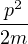 + 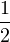mω2x2, | (1) |
and we note for future use the following (which you should verify):
| {x,H} | = 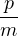, | (2) |
| {p,H} | = -mω2x. | (3) |
Now, if we are interested in the position of our mass as a function of time, we first give initial conditions (x0,p0). Next, we assume that x can be expanded in a Taylor series (which is usually the case for us physicists):
| x(t) = x0 + ẋ0t + 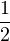ẍ0t2 + ... | (4) |
where the time derivatives of x are all to be evaluated at t = 0. Consider the first time derivative: ẋ = {x,H} = p∕m, so ẋ0 = p0∕m, which seems reasonable. Next, ẍ = {ẋ,H} = {p,H}∕m = -ω2x, so ẍ0 = -ω2x0. If we keep going and plugging in our results, we find
| x(t) | = x0 + 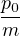t -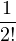x0ω2t2 -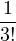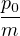ω2t3 + 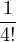x0ω4t4 + ... | (5) |
| = x0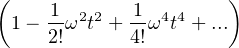 + 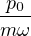 | (6) | |
| = x0 cos(ωt) + 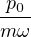sin(ωt) | (7) |
Cool, right? With just Taylor series and the Poisson bracket algebra we recovered the classical harmonic oscillator solution :)
Exercise: In the same way you did for quantum mechanics, factor the Hamiltonian into a product of variables a, a†. Do the analog of the above calculation to study the time evolution of the a’s. Can you see a connection to coherent states? What precisely are the differences with quantum mechanics?
Exercise: Find a general Taylor expansion for an observable  (x,p), independent
of the specific Hamiltonian (in terms of just Poisson brackets between canonical
variables and H). Try it for potentials like V (x) = x3. What happens for
V (x) = sin(x)?
(x,p), independent
of the specific Hamiltonian (in terms of just Poisson brackets between canonical
variables and H). Try it for potentials like V (x) = x3. What happens for
V (x) = sin(x)?
Note: from the above exercise, you might conclude that all systems, even those that are not integrable, allow for explicit solutions x(t). Why is this not the case?